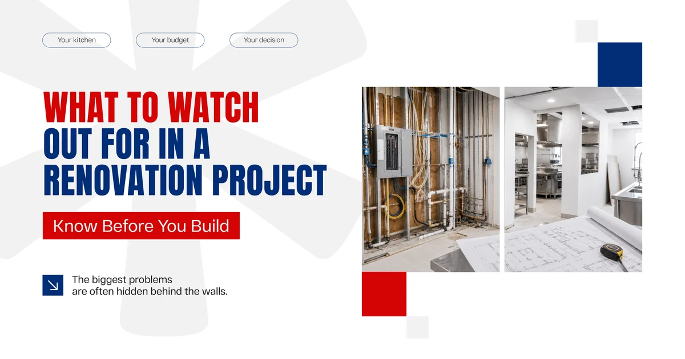
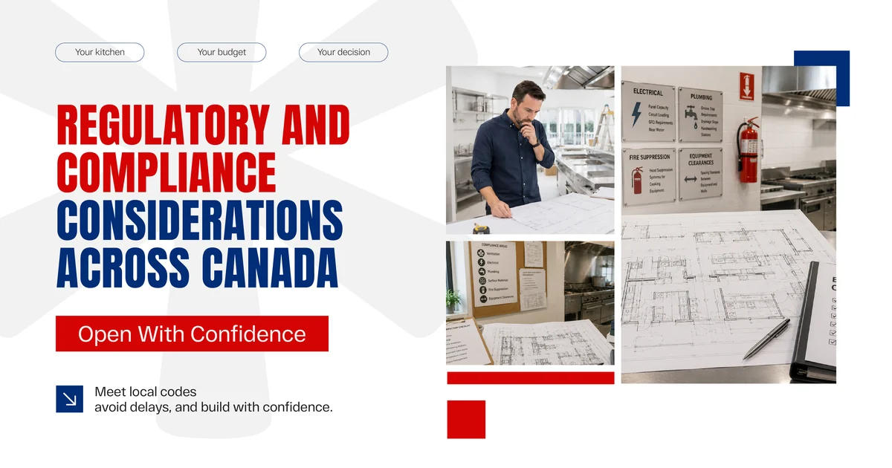

Both options have real merit. Both come with trade offs. And the right answer depends on your specific situation, your budget, your timeline, and what the existing space can actually support. This guide walks through both paths honestly, so you can make a clear headed decision before committing to either one.
Why This Decision Matters More Than Most Owners Expect
A commercial kitchen is not just a room with appliances. It is the operational core of a food business. Every service runs through it. Every health inspection scrutinizes it. Every staff member works inside it for hours at a time.
Getting the kitchen wrong is expensive in ways that go well beyond construction costs. A poorly designed workflow slows down service. Undersized ventilation creates compliance problems. Inadequate electrical capacity limits the equipment you can run at once. These are not issues that get fixed with a coat of paint later.
This is why the renovation versus new construction decision deserves real thought, not just a quick cost comparison.
The Case for Renovation
Renovation makes sense in more situations than people initially assume. If you are working with a space that already has the bones of a functional kitchen, updating it rather than starting fresh can save significant time and money.
The existing plumbing rough in, the electrical infrastructure, and the structural layout all have value. Tearing them out when they can be updated or repurposed adds cost without necessarily adding proportional benefit.
Renovation also tends to move faster through the permitting stage when the building is already approved for food service use. A local construction company familiar with your municipality can often navigate this process more efficiently than a full new build would allow.
The Case for New Construction
New construction becomes the better choice when the existing space simply cannot support what the business needs. If the kitchen layout is fundamentally wrong for your operation, if the infrastructure is too outdated to upgrade economically, or if you are building in a space that has never been used for food service, starting fresh often makes more sense than trying to work around what is already there.
New construction also gives you complete control over every detail from the start. Workflow, station placement, ventilation design, drainage layout, and equipment integration can all be planned around how your specific operation actually runs, rather than adapted to an existing layout that was designed for someone else.
Key Factors to Compare Side by Side
The decision usually comes down to a combination of budget, existing conditions, timeline, and long term operational goals. Here is a straightforward comparison to help frame the choice.
| Factor | Renovation | New Construction |
|---|---|---|
| Upfront Cost | Generally lower | Higher initial investment |
| Timeline | Faster in most cases | Longer due to full build cycle |
| Design Flexibility | Limited by existing layout | Complete control over design |
| Infrastructure | Works with existing systems | Built to exact specifications |
| Permits | Simpler if use remains the same | Full permitting process required |
| Disruption | Can affect existing operations | Cleaner break if moving locations |
| Long Term Fit | May require future upgrades | Built for long term operational needs |
Neither column is automatically better. The right answer depends on what your specific project actually requires.

What to Watch Out for in a Renovation Project
Renovation projects carry risks that are not always obvious before work begins. Older commercial spaces sometimes reveal problems once walls open up that were not visible during the initial assessment. Outdated wiring that cannot handle modern kitchen loads. Plumbing that does not meet current code. Ventilation systems sized for equipment that no longer matches what the kitchen needs to run.
A trustworthy construction company in Canada will include a thorough site assessment before providing a renovation estimate, rather than quoting based on surface level observations. That assessment is what separates an estimate that holds through to completion from one that grows significantly once construction begins.
Hidden Infrastructure Costs Are the Biggest Renovation Surprise
The most common source of renovation budget surprises in commercial kitchens is infrastructure that needs to be brought up to current standards. Electrical panels that need upgrading, gas lines that need rerouting, and drainage systems that need reconfiguring are all common discoveries in older commercial spaces.
This does not mean renovation is the wrong choice when these issues exist. It means they need to be identified and priced properly before the project begins, not discovered halfway through.
What New Construction Requires You to Plan for Early
New construction gives you more control but demands more decisions upfront. Equipment selection needs to happen earlier because mechanical, electrical, and plumbing rough in depends on knowing what you are installing and where. Ventilation design needs to account for the full cooking load, not just the immediate menu.
Working with a building construction company that has experience in commercial kitchen builds helps significantly here. Builders who understand food service operations ask the right questions during the planning stage, which prevents the kind of mid construction changes that push timelines and budgets in the wrong direction.

Regulatory and Compliance Considerations Across Canada
Whether you renovate or build new, commercial kitchens in Canada are subject to health authority regulations, fire code requirements, and local building standards that vary by province and municipality. These are not optional considerations and they are not things to figure out after construction is complete.
Health inspectors look at ventilation, drainage, surface materials, handwashing station placement, and equipment clearances among other things. Building inspectors look at electrical, structural, and plumbing compliance. Getting both right requires a construction company that understands commercial kitchen requirements specifically, not just general commercial building standards.
Local construction companies working in your region typically understand what inspectors in your area pay close attention to. That local knowledge often prevents delays and costly corrections that can push back an opening date significantly.
Here is a quick summary of the key compliance areas that affect both renovation and new construction projects.
| Compliance Area | What It Covers |
|---|---|
| Ventilation | Hood sizing, exhaust capacity, makeup air requirements |
| Electrical | Panel capacity, circuit loading, GFCI requirements near water |
| Plumbing | Grease trap requirements, drainage slope, handwashing stations |
| Surface Materials | Washable and non porous finishes in food prep areas |
| Fire Suppression | Hood suppression systems for cooking equipment |
| Equipment Clearances | Spacing standards between equipment and walls |
A construction company that understands these requirements from experience rather than just from a checklist makes the compliance process significantly smoother.
How Platinum Construction Supports Commercial Kitchen Projects
At Platinum Construction, we have worked with restaurant owners, food service operators, and commercial developers across Canada on both kitchen renovation and new construction projects. We understand that the decision between the two is not always obvious, and we help clients work through it honestly rather than steering them toward the option that is simpler for us.
Our teams operate across Ontario, British Columbia, Alberta, and Atlantic Canada and U.S. We understand the health authority and building code requirements that apply in different provinces, and we manage the permitting process as part of every project so clients are not left navigating that on their own.
For renovation projects, we start with a thorough site assessment that identifies existing infrastructure conditions before any pricing is finalized. This means the estimate you receive reflects the actual project, not an optimistic version of it.
For new construction, we work through equipment selection, workflow planning, and mechanical coordination early in the design process so the final build supports how the kitchen actually needs to operate.
Whether you are a first time restaurant owner or an experienced food service operator expanding into a new location, our team brings the same level of care and the same commitment to clear communication to every project.
Frequently Asked Questions
Is it cheaper to renovate a commercial kitchen or build new
Renovation typically costs less upfront, but hidden infrastructure issues can close that gap quickly. A proper site assessment before committing to renovation is essential to get an accurate picture.
How long does a commercial kitchen renovation take
Most commercial kitchen renovations in Canada take between 6 and 16 weeks depending on scope and whether significant infrastructure changes are needed.
How long does new commercial kitchen construction take
New construction timelines vary widely, but most projects run between 4 and 12 months from permit approval to occupancy depending on the size and complexity of the build.
Do I need a permit to renovate a commercial kitchen
Yes in most cases. Any work involving plumbing, electrical, ventilation, or structural changes requires permits. A good construction company manages this process as part of the project.
What is the biggest mistake people make during a commercial kitchen renovation
Not doing a thorough infrastructure assessment before finalizing the budget. Hidden issues in older spaces are the most common cause of renovation cost overruns.
Should I hire a local construction company for a commercial kitchen project
Yes. Local construction companies understand regional health authority requirements and building codes that directly affect how a commercial kitchen needs to be built.
How do I know if my existing kitchen can be renovated or needs to be rebuilt
A site assessment by an experienced construction company will evaluate the existing infrastructure and give you an honest answer about what can be updated versus what needs to be replaced.
Get the final commercial kitchen Renovation with Platinum Construction
The choice between renovating a commercial kitchen and building a new one is not one size fits all. It depends on your space, your budget, your timeline, and what your operation genuinely needs to run well.
What matters most is making that decision with accurate information, a thorough understanding of your existing conditions, and a construction company in Canada that will give you honest guidance rather than simply telling you what you want to hear.
If you are working through this decision for a project in Canada, Platinum Construction is ready to help you think it through. Visit platinumconstruction.com to get started with a free consultation.